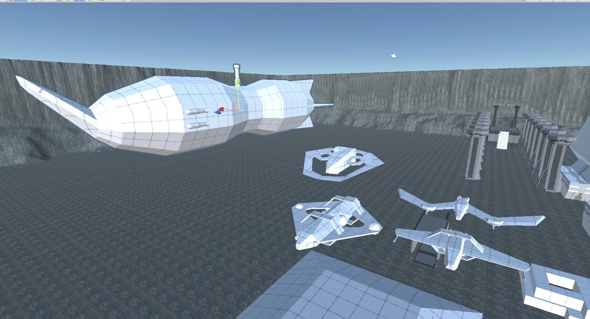
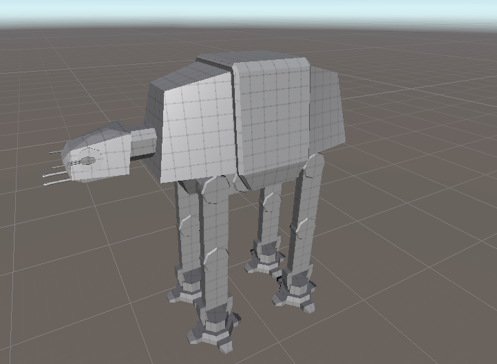
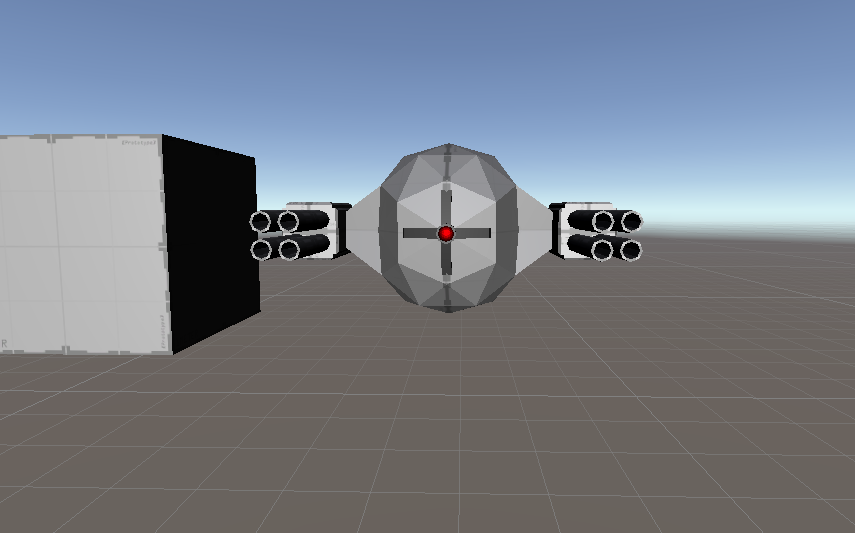
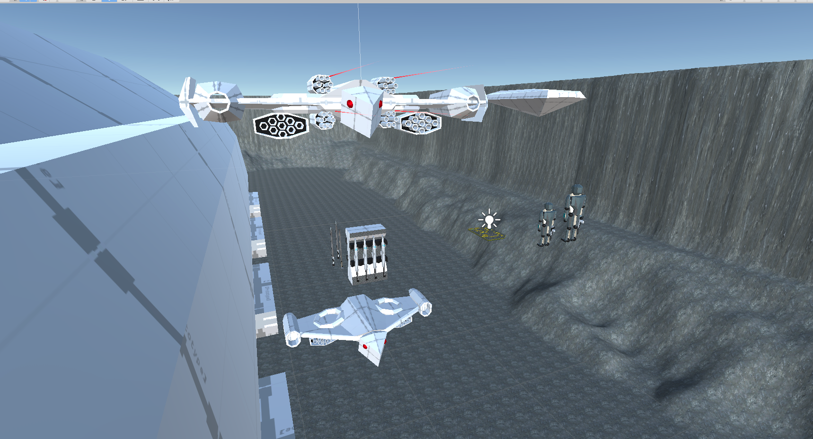
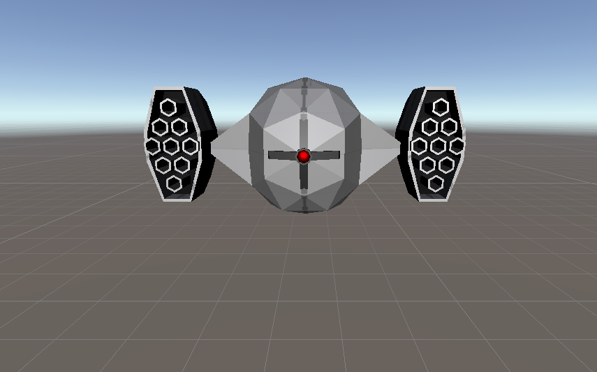
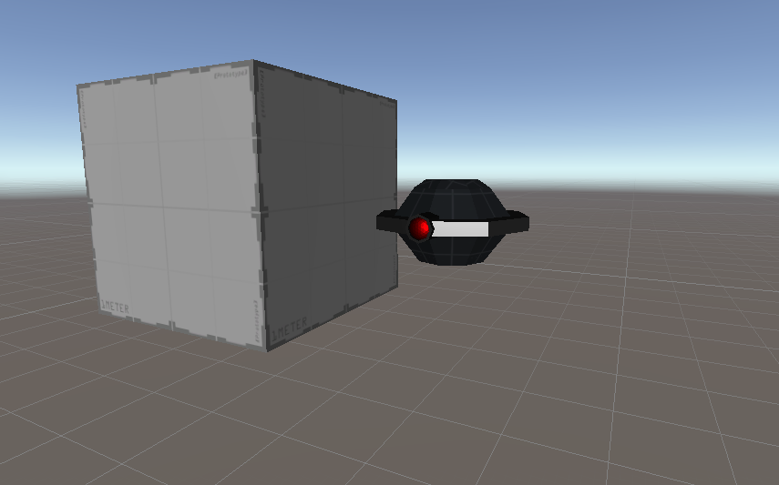
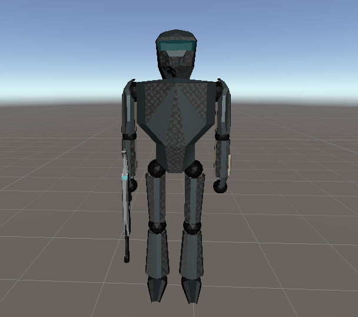

Prototyped game systems, not full games, but parts therof. Also including 3d modeled assets.
1/7
A collection of UHC (United Human Colonies) Fighters, Bombers, Interceptors, light gunship, and a Fire Nation Airship
2/7
Just an AT-AT that I modeled for fun. Please don't sue me.
3/7
Combat class defense drone designed for a game. Equipped with twin gatling guns, these are mid-weight combatants designed for front line fighting.
4/7
Featured top is a Mammoth Class Assault drone, Below is a standard Assault Class Drone. Assault drones of both types are designed as supiriority units. Providing heavy support, for other drones, or as a single heavy weapons platform.
5/7
Missile Class Defense Drone. Equipped with twin rocket/missile launchers, these are mid-range support units, designed to provide artillery support to their allied drones.
6/7
Patrol Class Defense Drone. Equipped with a light laser, these drones are only a threat in large numbers, but they can call in other drones to help, and provide alerts to their allies.
7/7
Mark VI Powered Armor, originally used by the AMSR (Advanced Millitary Space Reserves) This particular set is owned by Vearin Terril, and maintained by his VI T.A.V.A.